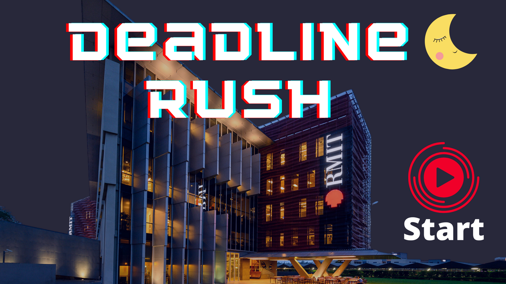
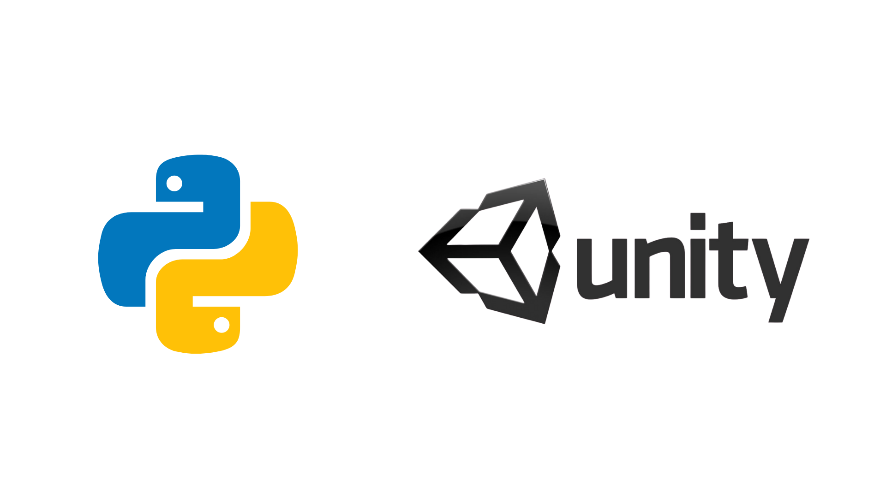

Since I was a child, I have been playing games as games help me relax after stressful lessons. I have played numerous kinds of games, such as arcade games, sports games, and strategy games. Each game has its own features. For example, strategy games such as plants and zombies require players to understand the characters to organize the plants suitably, while sports games such as FIFA ask players to know about soccer rules. Games help people relax and help people develop their mind and reflection as the brain works while playing though we think it does not. Moreover, I have learned a myriad of new vocabulary while playing games as it is more interesting. Having realized the benefits of games, I want to develop a game that helps people relax and helps them absorb more knowledge passively while playing. In the future, I hope that it will be ubiquitously played by not only teenagers but also adults. Here is some information about my potential project.
HomeIn this project, I will create a game called “Deadline Rush.” Deadline rush is an endless runner game, which means the player will play until they lose the game. First, the player needs to choose their primary or interested major. The game is played by clicking on the start button when the main character is being chased by a monster called Deadline. While on the run, there will be some objects that prevent the character. To overcome these objects, players must answer academic questions related to their choice at the beginning. If the player answers correctly, they will get pass and earn some boosting items. Otherwise, they will fall and be eaten by the Deadline. For example, the player chooses IT (HTML) as their major. Thus, while there will be questions related to information technology that popped up in the run, such as the tag <b></b> in HTML is to a. make the text bold, b. hide the text. If the player chooses a, they will get pass and confront next questions after a while running. Otherwise, the character will be eaten by the Deadline. However, there will be some funny questions popped up during the game for relaxing.
In this project, I will create a game called “Deadline Rush.” Deadline rush is an endless runner game, which means the player will play until they lose the game. First, the player needs to choose their primary or interested major. The game is played by clicking on the start button when the main character is being chased by a monster called Deadline. While on the run, there will be some objects that prevent the character. To overcome these objects, players must answer academic questions related to their choice at the beginning. If the player answers correctly, they will get pass and earn some boosting items. Otherwise, they will fall and be eaten by the Deadline. For example, the player chooses IT (HTML) as their major. Thus, while there will be questions related to information technology that popped up in the run, such as the tag <b></b> in HTML is to a. make the text bold, b. hide the text. If the player chooses a, they will get pass and confront next questions after a while running. Otherwise, the character will be eaten by the Deadline. However, there will be some funny questions popped up during the game for relaxing.
HomeWhen the player runs the game file, a home page will appear. Next, the player is asked to choose the major they are interested in, including business, design, management, profcom, information technology, software engineering, or robotics. Afterward, the game will begin after the player clicks the begin button. There will be three buttons on the right corner during the gameplay, they are pause, restart, and quit buttons. The pause button is to stop the game until the player re-click it, while the restart button allows the player to play the game again. The quit button immediately exits the game whenever being click, which is used in emergency situations. In terms of questions resources, I will get from the lecture slides, tutorial sessions, and books from RMIT library to make a questions bank of about 100000 questions. In the initial stage, relaxing questions such as the hair color of Joe Biden will appear more frequently. Gradually, the questions related to academic knowledge will randomly pop up more frequently. The player can use buttons such as <, >, ^, and mouse to control the character. Once passing a question, the character will receive a boosting item such as a hint for the next questions, skip the next two questions, or speed up. Those items help them to pass the next questions easier. Furthermore, at the end of games, there will be a table to point out which aspect the player needs to improve and suggest some references such as books on RMIT library or a video about that aspect. Besides gameplay, the game offers the player a list of questions they usually answer incorrectly and make warn for player whenever they enter a game. Furthermore, if the player is confident enough, they can try the nightmare mode, in which all of the questions are advanced knowledge of their major. This mode is created for the player’s self-improvement as they can learn a great amount of new knowledge by playing the game. In long term, the game will be developed to mix the major such as IT and design for knowledge diversity, which prevents them from boring emotions. Moreover, when the player clicks on the exit button, the game will ask the player whether they want to export a pdf file about what they have learned at that day so that the player can easily print out or store on their devices for review. Also, the game will be designed to protect the health of the player. I will add some functions such as time alert to the game. For instance, the game will print out an alert containing “Please stand up and go around for a while, you are seeing the screen for a long time” when the player plays game continuously for two or three hours. In addition, whenever seeing deteriorating performance such as four or five continuous wrong answers, the game will print out: “You are tired, please take a 10 minutes break” to relax and get on a good mood for going on playing.
Home HomeIn terms of hardware, I need a computer with appropriate configuration, and other necessary device such as mouse, keyboard, and headphone or speaker to make this game. Turning to software, I am thinking of using library Pygame in Python3 using PyCharm Pro as IDE. This way will facilitate the progress as I am familiar with Python. However, there is another way that can maximize the efficiency of the game is to use Unity as the tool. The unity use C# for coding. Therefore, the graphic and the sound of the game will be more beautiful. In term of open source tools, I will focus on two main aspects including graphic and sound. To improve the quality of graphic, I will use Blender for making 3D graphic and animation to make the game livelier and more attractive. In terms of sound, the audacity will be used for modifying the sound. For instance, the music will be played at higher speed when the player is on fire or the sad music will be played when the player fails to answer the question.
To create this Deadline Rush, the skill of using programming language is strictly required. In details, the deep understanding about Python 3 and C# is highly required to use Pygame and Unity for creating the content of the game. Furthermore, the organize and structure understanding is recommended for arrange the object in the game suitably. Moreover, some relevant skills of using audacity and blender is essential. Besides, as the game is created with the collaboration of many developers, the team-working skills such as using git and git hub and communication are required. In addition, the skill of problem solving is needed as there will be numerous problems during the progress.
If the project is successful, Deadline Rush will be used by almost RMIT students for not only relaxing but also reviewing the knowledge. Moreover, if possible, the game will be developed to be mobile app for flexibility so that the player can use it at any location and time. Moreover, the problem of RMIT such as overload of students on SAS or lecturer’s stressful timetable will be solved as students can review the lessons by playing game. They will just book appointment with lecturers for consultations, which helps lecturers save their time for others work. The impact of this project is to help the students to review the knowledge easier with random questions from question bank, which is more interesting than watching the boring slides.
On the one hand, this game helps players to enhance their academic performance. On the other hand, abusing usage of this game may lead to some consequences. Firstly, spending too much time sitting in front of the screen can do harm for the eyes, which gradually causes eyes diseases such as cataract and glaucoma. Furthermore, this game may decrease the amount of direct conversation between people and people, which may cause some problem in communicating of the players if they are too depended on this game.
Homecreated with
templated.co .